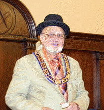

V∴W∴ COETUG MORGAN – SECRETARY

Daylight’s secretary Coe Morgan is the lodge’s senior elected officer both in age and length of service. He joined Daylight in 1968 from Burien’s South Gate Lodge No 247. His family traditions both Masonic and otherwise go back several generations. He was born in Kent, Washington in 1934, part of a pioneer Burien-Highline area family on his mother’s side that settled in what is now Normandy Park and Sunnydale in the early 1880s. His father Tug was from a family that settled a little later in that century in the Georgetown area of Seattle. His uncles were early members of Home Lodge No. 100. Both Coe and his father were both members of South Gate Lodge; he became a member in 1956 at the age of 21. He was Master Councilor of Highline Chapter, DeMolay for Boys in Burien and is now a member of the DeMolay Legion of Honor.
Through theater and church he was friends with Daylight’s secretary George Peckham who frequently urged him to visit the Daylight. He joined in 1968 and served as Master in 1973. Two years later he was elected secretary. In 1999 and 2000 he was the Master of Tyee №. 115, the Wayfarer’s Daylight Lodge in Renton and was very instrumental in revitalizing it. He is a Past High Priest of Oriental Chapter No. 19, Royal Arch Masons.
The 1980 Grand Master appointed him as his Deputy in District №. 5. He has been Grand Historian and Grand Orator plus served on numerous Grand Lodge committees. During the June 2007 Grand Lodge meeting, in recognition of his work with the Grand Secretary he was invested with the honorary title of Assistant Grand Secretary-emeritus. As one of the senior lodge secretaries in the Grand Lodge he has been part of the Grand Secretary’s team training newly installed secretaries. He was a founding member and the first General Secretary of the North American Conference of Daylight Lodges.
He follows a long family tradition in serving his community. He is a member and has been Chair of the Sound Transit Citizen’s Accessibility Advisory Committee. At a state level, he represented the Masonic fraternity on the Washington Territorial Sesquicentennial Commission. For the celebration he prepared a research paper on Washington Masonic Politicians; a compendium of Masonic Governors, Senators and Representatives of the territory and state. Governor Mike Lowery appointed him a commissioner on the Washington State Arts Commission. He also served as secretary of the Board of Trustees of the Seattle Chamber Players. For nearly twenty years he worked part-time in Seattle theater earning his Actor’s Equity card. In the early 1970s with W∴ Allen Carter he ran his own small theater, an adventure that soon convinced him the theater was a “not for profit” business. He continues to be supportive of local theaters and an avid opera fan traveling to many opera houses to see many different operas, especially contemporary works. He is very supportive of Senior Warden Anderson’s wife Carla in her goal of becoming an “opera diva.”
A member of the Machinist Union (IAM&AW) for more than twenty years he was an elected officer; eighteen as a local or district lodge president. For ten years he was on the Advisory Board of the Labor Center at The Evergreen State College. The March 1990 Masonic Service Association of North America’s Short Talk Bulletin “Daylight Masonry, An Old Idea Renewed.” was his brief history of daylight Masonry. Early in the 20th Century his great grandfather Henry Blaker sold produce from his Sunnydale farm at Seattle’s Pike Place Market. Now more-or-less retired Morgan spends Mondays as a volunteer at the Market’s 1st Avenue and Pike Street Information Booth.